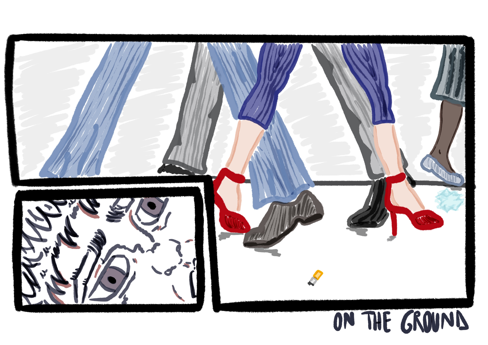
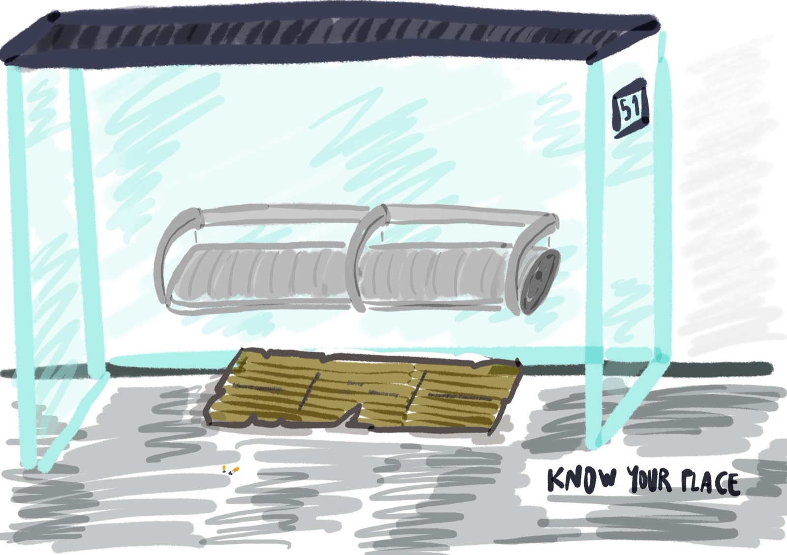
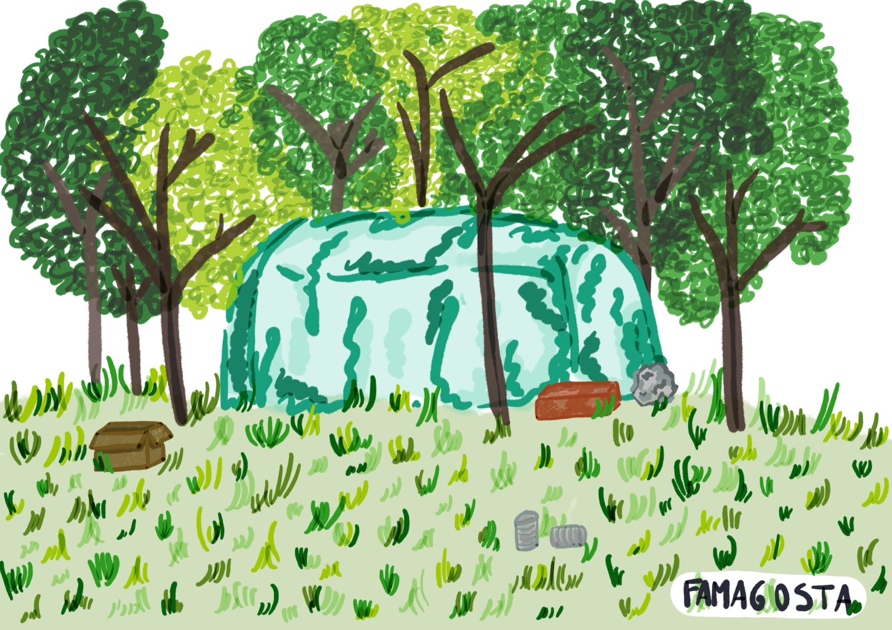

Senzatetto a Milano:
Perdere la propria casa e la propria identità
“Casa è un edificio destinato a fornire riparo per l’abitazione umana, generalmente posseduto da persone, decorato e progettato spazialmente sia negli interni sia negli esterni, attraverso il quale uno spazio vuoto viene trasformato in uno spazio residenziale.”

A Milano, secondo i risultati dell’indagine racCONTAMI 2024 (febbraio 2024), erano presenti 2.343 persone senza dimora, una cifra equivalente allo 0,17% della popolazione urbana.1
La condizione delle persone senza dimora a Milano è una realtà tanto visibile quanto ignorata: una presenza silenziosa che occupa strade, stazioni, parchi e sottopassaggi. Appaiono e scompaiono tra la folla, tra la disattenzione e l’indifferenza di una città che corre veloce.
Questa etnografia si basa su testimonianze dirette raccolte attraverso documentari, video, interviste e reportage sul campo, offrendo una visione umana, sociale e pratica della condizione di senzatetto nella metropoli lombarda. L’obiettivo è dare voce a coloro che, nelle strade di Milano, vivono una quotidianità fatta di difficoltà, adattamento, ma anche di relazioni, strategie e speranza.
Cosa accade quando si perde la propria casa, il proprio riparo e la propria quotidianità? Come comprenderemo attraverso le testimonianze di Marco, Gianluca, Mario, Valentino, Max, Domenico, Alan e Angela (nome di fantasia), significa anche perdere la propria identità e l’accesso alla vita sociale e alle relazioni.
Diventare senzatetto significa perdere il diritto a vivere, ma anche il diritto ad appartenere. Significa diventare abitanti di ciò che Marc Augé2 ha definito “non-luoghi”: spazi transitori e anonimi nei quali non si instaurano legami duraturi né si sviluppano forme di identità. Le banchine, i vagoni della metropolitana, i sottopassaggi e i portici diventano rifugi temporanei, privi di protezione e significato.
La perdita di una casa comporta anche la perdita della dignità, dell’intimità, della routine quotidiana e della stabilità mentale. Una casa non è soltanto un tetto: è lo spazio simbolico nel quale si costruisce il proprio sé, si organizza la propria vita e si conserva la propria memoria.
Contesto urbano: Milano e la condizione dei senzatetto
La città dispone di una rete di servizi che comprende mense, dormitori, ambulatori solidali e centri di ascolto, ma questi strumenti spesso risultano insufficienti o non adeguati ai reali bisogni della popolazione senza dimora.
Le risorse sono limitate, le regole rigide e l’accesso burocratico complesso. Inoltre, la stessa società milanese oscilla tra sentimenti di compassione e atteggiamenti di esclusione. Molte persone considerano la povertà estrema come il risultato di scelte personali sbagliate, vizi o fallimenti individuali, alimentando uno stigma che contribuisce a isolare ulteriormente chi vive per strada.
1. Alimentazione
Il cibo rappresenta uno dei bisogni primari per chi vive in strada, ma anche uno degli ambiti nei quali la città di Milano sembra riuscire a rispondere con una certa efficacia, soprattutto grazie al lavoro incessante di associazioni come Opera San Francesco per i Poveri, Pro Tetto 3 e dei volontari.
Le testimonianze dirette raccontano una rete di solidarietà che, nonostante mille difficoltà, riesce a garantire pasti caldi e regolari.
“Per mangiare, Milano è molto organizzata. Ci sono più associazioni, per esempio Opera San Francesco dove due volte al giorno, tramite una tessera, ti danno un pasto caldo completo. Oltre alla sera passano diverse associazioni di volontariato che portano tè, panini e merendine. Quando vedi qualcuno rovistare nei cassonetti lo fa perché è assurdo: qui il cibo non manca.”
“Per mangiare ho fatto una tessera valida per tre mesi che permette di mangiare [alle mense]. Mangiavo nel pomeriggio e mettevo da parte qualcosa per la sera. Infatti c’erano molte associazioni che passavano la sera e mi davano una zuppa o una brioche. Mangiare era l’ultimo dei miei problemi.”
2. Dormire
Dormire per strada è una delle esperienze più traumatiche e complesse per chi vive in condizioni di senzatetto. Non si tratta soltanto di trovare un luogo dove sdraiarsi; si tratta di sopravvivere alla notte. Il freddo, il rumore, la paura, l’incertezza e la possibilità di essere derubati o aggrediti sono sempre presenti. Dormire per strada è un atto che richiede una vigilanza continua: un sonno mai completamente tranquillo, sempre interrotto.
“Finché avevo una vita normale c’erano alcuni pericoli che non conoscevo. La paura di addormentarsi e poi svegliarsi derubati è qualcosa che chi non è senzatetto non può capire. Quando ti addormenti per strada non puoi sapere cosa succederà.” “Ogni mattina appena ti svegli devi sistemare tutto perché qui [Duomo di Milano] ci sono persone che lavorano, quindi non è casa tua: è casa tua per la notte. Al mattino, per un senso di civiltà, è giusto che le persone che lavorano non trovino la tenda montata da me mentre dormo.”
Molti scelgono luoghi semi-nascosti o periferici, come parchi o sottopassaggi.
“Dormo al Parco Ravizza, ma quando c’è brutto tempo dormo al coperto a San Babila. Rispetto al parco, qui è molto più pericoloso perché vengono a rubarci anche se siamo persone di strada, portandoci via oggetti di valore come cellulari o scarpe.”
I dormitori pubblici rappresentano un’alternativa, ma non sempre vengono percepiti come luoghi sicuri o accoglienti. Spesso le persone preferiscono la strada per evitare ambienti considerati degradati, violenti o sovraffollati.
“Chiediamoci perché non vanno a dormire nei dormitori in un letto caldo. Per l’igiene… ci sono le cimici dei letti che lasciano buchi sulla pelle. E poi ci sono diverse etnie: l’italiano è quasi sempre solo, al massimo in due [nel dormitorio]. Gli altri gruppi etnici sono più numerosi e, in una guerra tra poveri, hanno il potere del numero. Creano problemi… Se decidono che vogliono le tue scarpe e te le prendono, devi stare zitto.”
“Però ti dico una cosa: quasi quasi è meglio dormire qui che nel dormitorio. L’anno scorso ho provato un’esperienza in dormitorio: tra furti, persone che non ti piacciono, cimici che portano malattie, igiene che non c’è, del mangiare non parliamo… e poi l’ambiente: ti tengono perché hanno pietà di te, ma non perché tu possa migliorare, crescere. Per me stare in una stanza del dormitorio, invece di farmi crescere, è un ambiente di depressione. Puoi avere un letto, ma non socializzi come facciamo noi qui [per strada].”
Durante il periodo del Covid, la situazione è ulteriormente peggiorata perché le persone senza dimora sono state completamente abbandonate dall’amministrazione cittadina. Erano presenti soltanto le associazioni che cercavano di aiutarle fornendo cibo, ma essere costretti a dormire per strada durante una pandemia e con la città completamente chiusa le esponeva continuamente al rischio di contagio.
“So che per queste povere persone, soprattutto nel periodo del Covid con i contagi, ci sono molte strutture che stanno andando in rovina, come caserme militari ormai vuote. Perché non darle a queste persone povere senza casa? Metterle in funzione affinché queste persone non muoiano di freddo e non rischino di essere infettate dal virus [Covid-19]. Durante la prima fase eravamo tutti fuori, nessuno ci ha dato nulla per proteggerci.”
3. Igiene e salute
L’igiene personale per chi vive in strada rappresenta una sfida quotidiana. Non è semplicemente una questione di pulizia: riguarda la dignità, la salute fisica e mentale e la protezione dallo stigma sociale.
L’igiene personale è uno dei principali requisiti che nella nostra società permette l’accesso alla vita sociale e alle relazioni, poiché la mancanza di cura accelera la disgregazione dell’identità.
“Quando vedi qualcuno [senza dimora] che è sporco e non si lava, è perché ha perso la speranza, si è rassegnato.”
Durante il lockdown, con la chiusura di bar, stazioni e centri commerciali, l’accesso ai servizi igienici è diventato quasi impossibile. Molte persone sono state costrette a urinare o lavarsi all’aperto, esponendosi a rischi sanitari e a un’ulteriore umiliazione.
Questa dimensione invisibile della vita quotidiana, che per la maggior parte delle persone è data per scontata, per chi vive in strada rappresenta un bisogno continuamente negato.
“Se va bene ci laviamo una volta alla settimana, se va male, come durante il lockdown, ci laviamo alle fontane. Usiamo un piccolo sacchetto e facciamo i nostri bisogni, poi quando è pieno lo buttiamo. Svuotiamo questa [bottiglia] e facciamo pipì. Questi sono i servizi.”
“Abbiamo chiesto alla città di mettere dei bagni, almeno durante il lockdown. Con i bar chiusi, quali bagni possono usare? Se sono educati usano i sacchetti, altrimenti fanno per strada.”
L’accesso alle cure è complicato: chi non possiede una residenza o documenti spesso non riesce ad accedere alla continuità assistenziale, ai farmaci o alle visite specialistiche.
Alcune associazioni offrono ambulatori gratuiti, ma non sempre riescono a coprire tutti i bisogni. Inoltre, molte persone senza dimora sviluppano una diffidenza verso le istituzioni sanitarie, alimentata da esperienze di rifiuto o trascuratezza.

4. Sicurezza e violenza
A rendere ancora più difficile la situazione si aggiunge il pericolo della strada, non soltanto legato al clima, ma anche alla violenza gratuita, ai furti e alle aggressioni.
“Il giorno in cui sono arrivato a Milano mi hanno aggredito e rubato il telefono, che era il mio unico modo per muovermi e cercare contatti. Due giorni fa un mio amico, che non è fortunato come me ad avere una tenda, è stato derubato del telefono e del portafoglio. Abbiamo già una vita piena di limitazioni e problemi, poi dobbiamo anche stare attenti perché basta una piccola distrazione e rovini tutto.”
“Vorrei avere i documenti che avevo già, ma che mi sono stati rubati. Rubano alle persone che non hanno niente. Mi hanno rubato il portafoglio, il telefono, tutto mentre dormivo in stazione. Preferisco stare da solo perché non mi fido delle persone.”
Ciò che caratterizza l’esperienza di una persona senza dimora è la ricerca e la ricostruzione di una sorta di ambiente domestico o familiare che possa assomigliare a una casa anche nello spazio della strada.
Creare spazi di micro-intimità significa trasformare un carrello pieno di oggetti non in semplice spazzatura, ma in un archivio personale; un materasso sotto un ponte non è soltanto un segno di disagio, ma una strategia di sopravvivenza; un cartone nascosto dietro un angolo della strada non è un rifiuto, ma il letto per le notti successive.
Il tema della violenza è strettamente collegato ai dormitori, che possono diventare luoghi ad alta densità di criminalità e conflitti, risultando talvolta meno sicuri della strada stessa.
5. Salute mentale e resilienza
La vita per strada ha conseguenze devastanti sulla salute, sia fisica sia mentale. Il freddo, l’interruzione del sonno, la malnutrizione e l’esposizione agli agenti atmosferici rendono le persone senza dimora più vulnerabili all’invecchiamento precoce e alle malattie croniche.
Ancora più gravi sono però gli effetti psicologici: depressione, ansia, disturbi del sonno e dipendenze.
“Se hai un carattere debole finisci male. Molte persone purtroppo sono morte perché magari si sono buttate nell’alcol per debolezza di carattere, perché pensano che arrivando in strada non ci sia una via d’uscita, ma non è così. In realtà quando tocchi il fondo, e arrivare sulla strada significa aver toccato il fondo, rimane solo una cosa da fare: risalire, quindi tornare su.”
La solitudine e la sofferenza psicologica sono sia cause sia conseguenze della condizione di senzatetto. Molte persone hanno vissuto traumi durante l’infanzia o periodi di detenzione precoce, come Alan, che racconta il fallimento delle comunità di accoglienza.
“Ho pagato per quello che ho fatto, sono stato nel carcere minorile a 14 anni, dopo essere stato preso per una rapina a mano armata. Ho scontato in totale 4 anni di carcere. Poi ho fatto un altro anno di prigione a Montorio, a Verona, per reati commessi prima del periodo minorile. Dopo essere uscito sono venuto a Milano perché a Verona non c’erano associazioni che ti davano una mano con il cibo o i vestiti. Ho imparato molte cose dalla strada che non impari a scuola. Ti insegna come arrangiarti: se non trovi cibo non mangi, se non trovi da bere non bevi, sono cose tue.”
6. Identità, stigma e invisibilità
La difficoltà maggiore che viene continuamente raccontata dalle persone senza dimora riguarda il rapporto con gli altri individui che vivono in una condizione considerata normale.
Il sentimento più comune è quello di essere ignorati: distogliere lo sguardo, fare finta che queste persone non esistano.
“Non tutti vedono, questo è il punto. Molte persone non vogliono nemmeno sapere che c’è qualcuno che vive in mezzo alla strada, quindi non ti vedono proprio, tirano dritto come se non fossi nemmeno lì. Altri invece ti vedono e possono disprezzare il fatto che tu sia lì perché in qualche modo rovini il loro ambiente.”
Nel 1966 Mary Douglas4 ha approfondito lo studio delle nozioni di purezza e contaminazione nelle società umane, introducendo un concetto fondamentale: lo sporco è qualcosa che si trova fuori posto.
Ciò che consideriamo sporco, disturbante o inaccettabile non lo è per sua natura, ma perché rompe l’ordine culturale che ci aspettiamo.
In questo senso, una persona senza dimora che incontriamo e riconosciamo per strada, in un contesto urbano come Milano, viene percepita come qualcosa di fuori luogo, come qualcosa di sbagliato, persino fastidioso, perché interrompe l’ordine dello spazio urbano.
Dormendo in un luogo non destinato all’abitazione, rompe le norme estetiche e morali; inoltre, non produce, non consuma e non segue il ritmo della città. Soprattutto, rende visibili le vulnerabilità della società che la società stessa desidera nascondere.
“Io vivo sperando di tornare… non dico normale, ma vorrei un lavoro… che a 60 anni è un po’ difficile. Qualsiasi lavoro. A volte mi vergogno ad andare a chiedere l’elemosina, ma quando non ce la fai più cosa fai? Ci sono persone che pensano che lo facciamo per scelta [vivere per strada]. Pensano che siamo persone piccole, che non cresciamo.”
Spesso il vero bisogno primario che manca è l’interazione sociale: essere considerati, essere visti come esseri umani, uomini e donne, e non come rifiuti. Essere visti e non essere invisibili.
“Molte volte ho pensato: ‘Se un giorno finissi in mezzo alla strada mi vergognerei a chiedere l’elemosina’, ma ora lo faccio e quando qualcuno mi dà qualcosa, quella cosa non è ciò che mi sta dando, ma il gesto, il fatto che mi abbia visto in mezzo alla strada. Ti vedono, ti guardano, ti parlano, ti danno qualcosa e ti chiedono di cosa hai bisogno. Queste persone non sono molte, ma per fortuna ci sono.”
“Ci sono persone che ti salutano, persone che ti aiutano, persone che ridono di te, persone che ti guardano con disprezzo, persone che si vergognano ad avvicinarsi. Mi dà fastidio che le persone si fermino a fare fotografie senza motivo.”
Lo stigma sociale rafforza l’auto-esclusione. Chi vive per strada spesso interiorizza l’immagine negativa che gli altri proiettano su di lui e smette di cercare aiuto, affetto e speranza.
Recuperare un’identità è uno dei compiti più difficili nel percorso di reinserimento.
Conclusione
Le storie raccolte mostrano che la condizione di senzatetto non è una scelta, ma una situazione di vita, spesso il risultato di crisi personali o sistemiche. La strada rappresenta frequentemente l’unica soluzione possibile, ma non può sostituire una casa. Lo stigma sociale rafforza l’auto-esclusione. Chi vive per strada spesso interiorizza l’immagine negativa che gli altri proiettano su di lui e smette di cercare aiuto, affetto e speranza. Recuperare un’identità è uno dei passaggi più difficili nel percorso di reintegrazione.
Il primo passo per cambiare è l’ascolto: solo conoscendo queste vite invisibili possiamo iniziare a includerle.

Note
- Comune di Milano, «Welfare. Presentati i risultati di ‘racCONTAMI 2024’, i senza dimora sono lo 0,17% della popolazione cittadina». ↩
- Marc Augé (1935–2023) è stato un antropologo ed etnografo. Nel libro pubblicato nel 2018 Non-luoghi approfondisce questo concetto. ↩
- Da oltre 60 anni, Opera San Francesco si impegna a fornire i migliori servizi possibili alle persone in condizioni di povertà. L’associazione Onlus “Pro Tetto” ha come obiettivo sociale quello di aiutare persone senza dimora e famiglie in difficoltà prive di reddito. ↩
- Mary Douglas (1921–2007) è stata un’antropologa britannica, conosciuta per i suoi studi sulla cultura umana, il simbolismo e il rischio, con particolare specializzazione nell’antropologia sociale. Nel suo libro del 1966 Purezza e pericolo: un’analisi dei concetti di contaminazione e tabù, Douglas analizza il significato dello sporco, contestualizzandolo nelle diverse società e culture. ↩
Bibliografia
- Associazione Pro Tetto. Associazioneprotetto.it, 2017. Accesso 25 giugno 2025.
- Bernieri, Claudio. Le voci dei senza tetto a Milano. YouTube, 2025. Accesso 25 giugno 2025.
- Comune di Milano. Welfare. Presentati i risultati di ‘racCONTAMI 2024’, i senza dimora sono lo 0,17% della popolazione cittadina. Comune di Milano, 2024. Accesso 25 giugno 2025.
- De Vivo, Aniello. Ecco com’è la vita dei senzatetto a Milano (tutta la verità). YouTube, 2025. Accesso 25 giugno 2025.
- La nostra storia – OSF. Opera San Francesco, 9 gennaio 2025. Accesso 25 giugno 2025.
- Marc Augé (1935–2023). Wikipedia, Wikimedia Foundation. Accesso 25 giugno 2025.
- MilanoBellaDaDio. Gli invisibili di Milano. YouTube, 19 gennaio 2024. Accesso 25 giugno 2025.
- Wikipedia Contributors. Mary Douglas. Wikipedia, Wikimedia Foundation, 25 dicembre 2018. Accesso 25 giugno 2025.